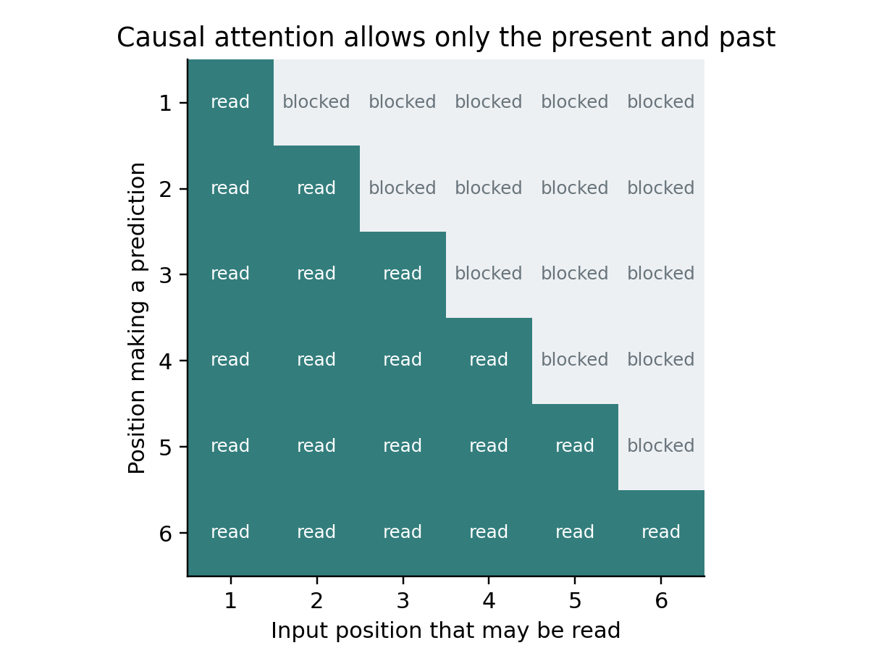

12 How a language model becomes a prediction machine
From text to token identifiers
A language model does not receive a paragraph in the same way a person sees it. Its tokenizer converts text into a sequence of integer IDs. Depending on the tokenizer, an ID might represent a word, part of a word, punctuation, whitespace, a byte, or a special control marker. The vocabulary is the set of available IDs.
Token count is not word count. The same sentence may have different token counts under different tokenizers. Languages, code, unusual names, and specialized notation can tokenize very differently. When budgeting a dataset or context window, use the actual model's tokenizer. A rough words-to-tokens estimate is useful only before you can measure.
A tokenizer is part of the model interface. If you train weights with one token-to-ID mapping and later use another, the model may interpret each ID incorrectly. Adding tokens changes the embedding and output layers unless the framework provides a compatible mechanism. Preserve the tokenizer, its special-token definitions, and the chat template with every model artifact.
The tiny transformer you just trained uses byte IDs from 0 through 255. This makes the representation easy to inspect and avoids training a separate tokenizer. It is less efficient for many natural-language tasks than a good subword tokenizer. That tradeoff is appropriate for an educational model, not automatically for a larger pretraining run.
Next token prediction creates many examples
Imagine the token sequence representing 'the cat sat'. During causal language modeling, one position predicts the next token using earlier positions. An input sequence of IDs [12, 34, 56] can be paired with targets [34, 56, 78], where 78 is the token immediately after the final input token. This shifted arrangement lets one forward pass calculate several next-token losses.
A model cannot be allowed to inspect the target token through a future input position while predicting it. A causal attention mask prevents each position from attending to later positions. If the mask is wrong, training loss can look excellent because the answer leaks into the input computation. Generation will then fail because future tokens are unavailable at real prediction time.
A next-token objective teaches a statistical continuation rule. A pretrained model may acquire broad patterns useful for many tasks because predicting text requires modeling many relationships in that text. Nevertheless, a low average next-token loss does not directly establish factual correctness, tool-use reliability, or instruction-following quality. Those need task-specific evaluations.

Figure 4 Each position may read the present and earlier inputs. The target is the next token, so future positions must be blocked.
The embedding table turns IDs into vectors
An embedding layer is a trainable lookup table. If the vocabulary contains 32,000 tokens and each token is represented by a vector of 512 numbers, the table contains 16,384,000 parameters. Looking up token 34 returns row 34. At initialization the vectors may be random; training changes them so the later computation can use them.
An embedding vector is not a sentence definition written in numbers. Individual dimensions do not generally have simple names. Meaning comes from how the vectors participate in learned transformations. Similarity can be useful, but a raw token embedding and a sentence embedding trained for retrieval are different objects with different intended uses.
The parameter count of an embedding table can be large relative to a small model. A model with modest transformer blocks and an enormous vocabulary may spend much of its capacity and memory on embeddings. Weight tying can reuse the input embedding matrix for the final vocabulary projection, reducing distinct parameters. It imposes a structural choice; it does not merely compress a file.
Order must be represented somehow
Without an order mechanism, a set of token vectors does not tell the model whether a sentence says 'the dog chased the cat' or 'the cat chased the dog'. Architectures add positional information in different ways. A simple educational model can use learned position embeddings: one vector for position zero, another for position one, and so on.
Many modern language models use rotary position embeddings or other schemes. You do not need to implement every scheme to begin fine-tuning, but you must respect the chosen model's supported context and positional configuration. Changing a maximum-length field does not magically give a model reliable understanding at a much longer context. Positional behavior, training distribution, attention cost, and evaluation all matter.
Attention lets a position combine information
In self-attention, each position produces a query vector, a key vector, and a value vector through learned transformations. Query-key comparisons yield scores describing which available positions may be useful. Softmax normalizes the scores into weights, and a weighted combination of value vectors produces an updated representation.
A concrete analogy is a question and a set of indexed notes, but the computation is numeric and learned. The network is not explicitly asking a human-readable question at every head. Attention weights are also not a complete explanation of why a final answer was produced.
Multiple attention heads let a block compute several such combinations. The outputs are combined and projected back into the model's hidden dimension. A feed-forward network then transforms each position's representation. Residual connections and normalization connect these components into a trainable block. Stacking blocks repeats the process at increasing representational depth. The original Transformer paper introduced the attention-centered architecture; current families modify many details. F03
Ordinary attention can materialize a score array whose size grows with sequence length squared. Doubling sequence length can therefore be much more expensive than doubling a small input file. Efficient attention implementations change memory behavior by avoiding unnecessary materialization, but they do not make long-context computation free.
The output head decides what is predicted
A causal language model normally ends with a vocabulary projection: each position's hidden vector becomes a score for every token in the vocabulary. The final position's scores can be converted into a distribution for the next token. Sampling or choosing a token extends the sequence, and the process repeats.
This output head is one reason a language backbone can be adapted to a different task. A classifier may read a pooled representation and predict one of a few labels. A token classifier may predict a label at every position. An option-pointer model may score a set of provided choices rather than generate arbitrary vocabulary tokens. These are architectural changes to what is predicted, not merely different wording in a prompt.
The task-specific chapters explain how to match the head, target, and loss. A backbone that was pretrained on language can provide useful representations even when the new output is not prose. Full-parameter training updates the backbone too; head-only training leaves it fixed. These are different experiments and should be described honestly.
Training and generation use different controls
During training, a causal language model can process many known target positions in parallel. During ordinary generation, later tokens depend on earlier generated tokens, so output is produced sequentially. Temperature and top-p are generation controls, not replacements for learning rate and batch size.
Temperature rescales logits before sampling. Lower positive temperature concentrates probability more strongly on favored tokens; higher temperature spreads it. Greedy decoding selects a highest-scoring token instead of sampling. Top-k keeps a fixed number of candidates; top-p keeps a probability-mass set. These choices change observed output without changing weights.
A key-value cache stores useful attention state from earlier generated tokens so it need not be recomputed at every new token. It consumes inference memory, especially with long context and multiple concurrent requests. Training often disables this cache because it is not needed in the same way and can conflict with memory-saving strategies. Never infer training-memory requirements from a generation-only memory reading.
Base models and instruction models
A base language model is primarily trained for continuation. An instruction model has usually undergone additional training intended to make it respond usefully to conversational or task instructions. The terms do not guarantee a particular quality level or safety behavior. Read the model card and evaluate the checkpoint you actually plan to use.
Chat formatting is an interface contract. Role markers, message boundaries, end-of-turn tokens, and generation prefixes tell the model how a conversation is arranged. Writing a custom format that looks reasonable to a human can conflict with the pretrained model's expected format. Use the official tokenizer's chat template unless your experiment intentionally retrains the interface.
When a training example includes a user message and an assistant response, you may want the loss only on the response. The prompt still influences the model through attention, but its tokens are not necessarily targets you want to reinforce. This requires a correct loss mask, distinct from an attention mask. The fine-tuning chapters show why this distinction is essential.
A useful architecture reading checklist
When inspecting a model, identify the tokenizer and vocabulary size, total parameter count, hidden size, number of blocks, attention type, number of attention and key-value heads, positional scheme, context claims, output head, numeric dtype, license, and exact revision. Do not memorize all of these values. Learn what changing each could affect.
For a mixture-of-experts model, distinguish total resident parameters from the subset activated for a token. For a hybrid recurrent-attention model, do not assume every block obeys an ordinary attention mask. For a multimodal model, distinguish text-only backbone size from the vision or audio components and projection layers. Marketing names are not memory accounting.
Exercises
Write a five-token input and its shifted next-token targets. Mark which target positions are legal for each input position to inspect. Explain how a future-token leak would make the training score misleading.
Calculate the parameter count of a 256-token vocabulary with 128-dimensional embeddings. Then compare it with a 50,000-token vocabulary at the same dimension. The results are 32,768 and 6,400,000 parameters, before any transformer block.
Explain the difference between changing sampling temperature, training an adapter, and replacing the output head. Only the latter two change the trained model artifact; each changes a different part of the system.